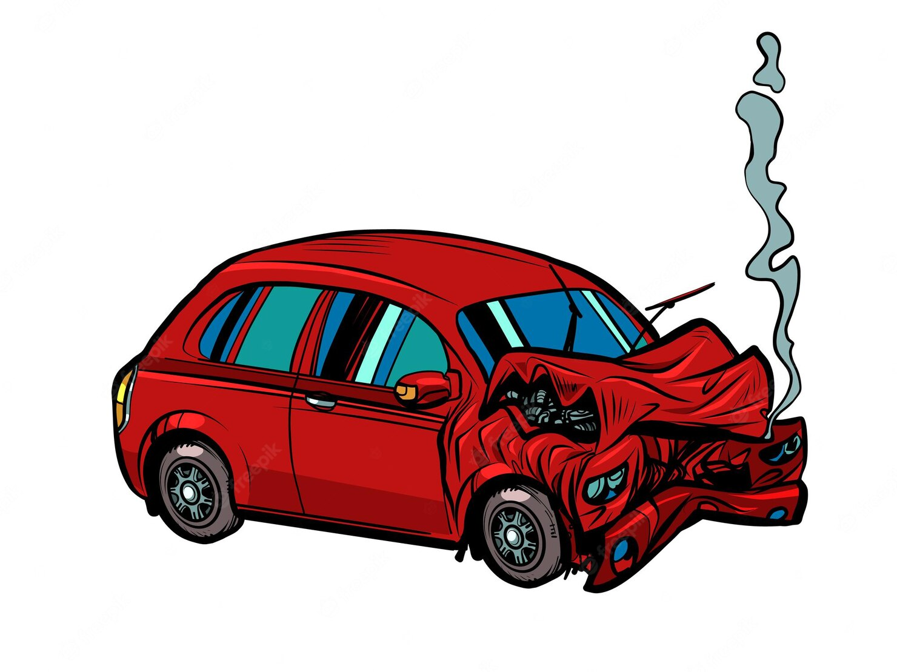
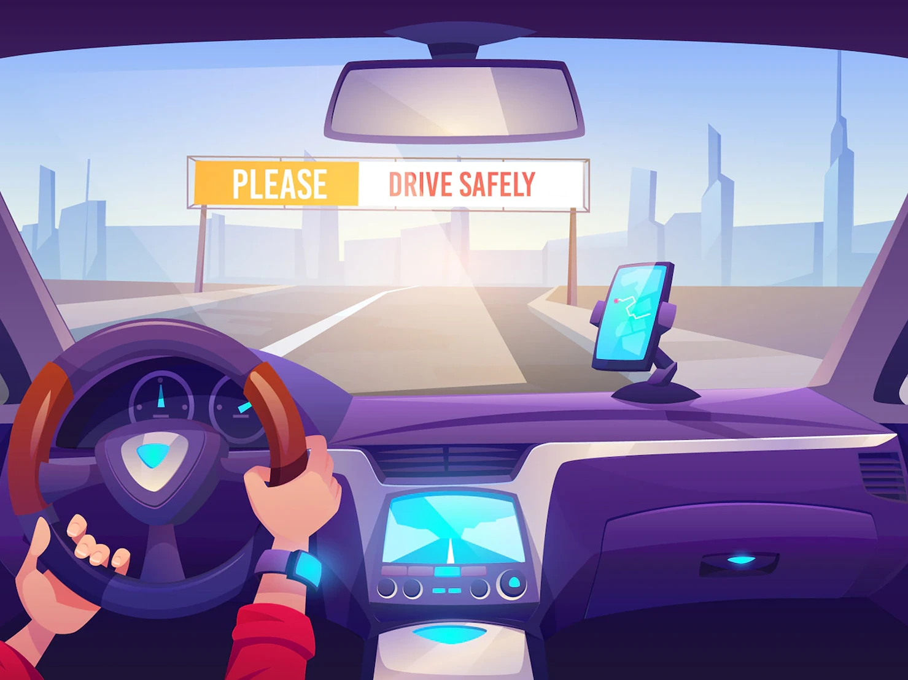
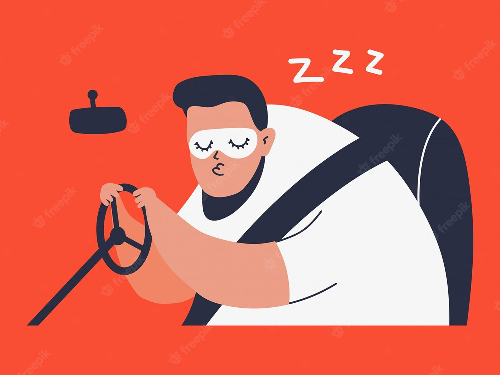

4 percent or approximately eleven million drivers admit they have had an accident or near accident because they dozed off or were too tired to drive.
Sleep-related crashes are most common in young people between the ages of 18 and 29.
The National Highway Traffic Safety Administration estimates that 100,000 accidents are the direct result of driver fatigue each year.

4 percent or approximately eleven million drivers admit they have had an accident or near accident because they dozed off or were too tired to drive.
Sleep-related crashes are most common in young people between the ages of 18 and 29.
The National Highway Traffic Safety Administration estimates that 100,000 accidents are the direct result of driver fatigue each year.

Vehicular crashes result in an estimated 1,550 deaths, 71,000 injuries, and 12.5 billion dollars in monetary losses each year.
According to data from Australia, England, Finland, and other European nations, drowsy driving represents 10 to 30 percent of all accidents.
Drivers who slept 4 hours less had 10 times the crash rate of drivers who slept for regular times.